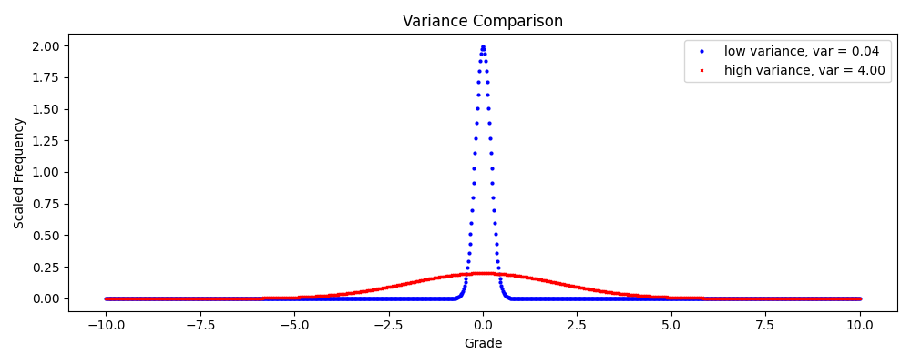
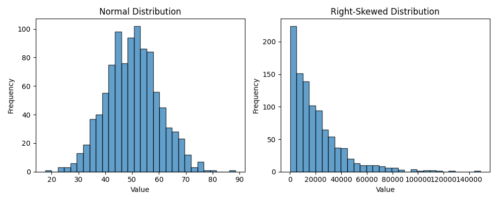

Section 1.1 Descriptive Statistics
Descriptive statistics summarize key features of a dataset, providing insights into its central tendency, dispersion, and shape. This process, known as Exploratory Data Analysis (EDA), helps identify patterns and trends before applying advanced statistical methods. Common measures include mean, median, mode, variance, standard deviation, range, quartiles, and visualizations like histograms and boxplots. These tools are essential for understanding data in fields like education, finance, and science.
Subsection 1.1.1 Measures of Central Tendency
Measures of central tendency describe the "typical" value in a dataset.
-
Mean (Average): The mean, denoted \(\mu\text{,}\) is the sum of all data points divided by their count. For a dataset \(\{x_1, x_2, \dots, x_N\}\) with \(N\) points, the mean is:\begin{equation} \mu = \frac{1}{N} \sum_{i=1}^{N} x_i\tag{1.1.1} \end{equation}where \(\sum_{i=1}^{N} x_i = x_1 + x_2 + \dots + x_N\text{.}\)Example: For student grades \(\{85, 90, 90, 95, 100\}\text{,}\) the mean is:\begin{equation*} \mu = \frac{85 + 90 + 90 + 95 + 100}{5} = \frac{460}{5} = 92 \end{equation*}The mean is sensitive to outliers. For income data \(\{20000, 30000, 35000, 40000, 1000000\}\text{,}\) the mean is \(225000\text{,}\) skewed by the outlier, while the median better represents the typical value.
-
Median: The median is the middle value in a sorted dataset, where 50% of the data lies below and above. For odd \(N\text{,}\) it’s the middle value; for even \(N\text{,}\) it’s the average of the two middle values.Example: For \(\{85, 90, 95\}\) (sorted), median = 90. For \(\{85, 90, 91, 95\}\text{,}\) median = (90 + 91)/2 = 90.5. For incomes \(\{20000, 30000, 35000, 40000, 1000000\}\text{,}\) median = 35000, robust to the outlier.
-
Mode: The mode is the most frequent value. A dataset may have no mode, one mode (unimodal), or multiple modes (bimodal or multimodal).Example: \(\{85, 90, 90, 95, 100\}\) has mode 90. \(\{85, 90, 90, 95, 95\}\) is bimodal (90, 95). \(\{85, 90, 95\}\) has no mode.
Comparison: Consider incomes \(\{20000, 30000, 35000, 40000, 1000000\}\text{.}\) Mean = 225000, median = 35000, mode = none. The median best reflects the typical income due to the outlier. See Figure 1.1.1 for a visual comparison.

import numpy as np
import matplotlib.pyplot as plt
from scipy.stats import gaussian_kde
data = [20000, 30000, 35000, 40000, 1000000]
kde = gaussian_kde(data, bw_method=0.5)
x = np.linspace(0, 1100000, 1000)
y = kde(x)
plt.figure(figsize=(8, 5))
plt.plot(x, y, label='Density')
plt.axvline(np.mean(data), color='red', linestyle='--', label=f'Mean = {np.mean(data):.0f}')
plt.axvline(np.median(data), color='green', linestyle='-', label=f'Median = {np.median(data):.0f}')
plt.xlabel('Income')
plt.ylabel('Density')
plt.title('Central Tendency Measures for Income Data')
plt.legend()
plt.grid(True, alpha=0.3)
plt.savefig('central-tendency.png')
plt.show()
Subsection 1.1.2 Measures of Dispersion
Dispersion measures how spread out data is around the central tendency.
-
Variance and Standard Deviation: Variance (\(\sigma^2\)) measures average squared deviation from the mean; standard deviation (\(\sigma\)) is its square root, in the same units as the data.For a population:\begin{equation} \sigma^2 = \frac{1}{N} \sum_{i=1}^{N} (x_i - \mu)^2\tag{1.1.2} \end{equation}For a sample (unbiased estimate):\begin{equation} s^2 = \frac{1}{N-1} \sum_{i=1}^{N} (x_i - \bar{x})^2\tag{1.1.3} \end{equation}where \(\bar{x}\) is the sample mean.Example: For grades \(\{85, 90, 90, 95, 100\}\text{,}\) \(\bar{x} = 92\text{.}\) Population variance:\begin{equation*} \sigma^2 = \frac{(85-92)^2 + (90-92)^2 + (90-92)^2 + (95-92)^2 + (100-92)^2}{5} = \frac{126}{5} = 25.2 \end{equation*}\(\sigma \approx 5.02\text{.}\) Sample variance: \(s^2 = 126/4 = 31.5\text{,}\) \(s \approx 5.61\text{.}\)Low variance (e.g., \(\sigma = 0.04\)) vs. high variance (e.g., \(\sigma = 4.00\)) shows tighter vs. wider spread as illustrated in Figure 1.1.2.
Figure 1.1.2. Comparing low and high variance datasets. import matplotlib.pyplot as plt import numpy as np from scipy.stats import norm x = np.linspace(-10, 10, 1000) low_sig, high_sig = 0.2, 2.0 low_var = norm.pdf(x, loc=0, scale=low_sig) high_var = norm.pdf(x, loc=0, scale=high_sig) fig, ax = plt.subplots(1, 1, figsize=(10, 4)) ax.plot(x, low_var, 'ob', markersize = 2, label=f"low variance, var = {low_sig**2:.2f}") ax.plot(x, high_var, 'xr', markersize = 2, label=f"high variance, var = {high_sig**2:.2f}") ax.set_title(f'Variance Comparison') ax.set_xlabel('Grade') ax.set_ylabel('Scaled Frequency') plt.tight_layout() plt.legend() plt.show() -
Range and Quartiles: Range = max - min. Quartiles divide sorted data into four parts: Q1 (25th percentile), Q2 (median, 50th), Q3 (75th). Use linear interpolation: position = \((N-1) \cdot p\text{,}\) where \(p = 0.25, 0.5, 0.75\text{.}\)Example: For grades \(\{70, 75, 80, 85, 90, 95, 100\}\text{,}\) \(N=7\text{.}\) Median (Q2) = 85. Q1 = 75, Q3 = 95. Range = 100 - 70 = 30. IQR = Q3 - Q1 = 20. Outliers: below Q1 - 1.5*IQR = 45 or above Q3 + 1.5*IQR = 125. These grades have no outliers.
Subsection 1.1.3 Distribution Shape
Histogram: Histograms show frequency distributions by grouping data into bins.
Example: For grades \(\{70, 75, 75, 80, 80, 85, 90, 95, 100\}\text{,}\) with bin size 10 from 70 to 110, see Table 1.1.3.
| Bin | Range | Data | Count | Frequency |
|---|---|---|---|---|
| 1 | \(70 \le x \lt 80\) | \(\{70, 75, 75\}\) | 3 | 0.333 |
| 2 | \(80 \le x \lt 90\) | \(\{80, 80, 85\}\) | 3 | 0.333 |
| 3 | \(90 \le x \lt 100\) | \(\{90, 95\}\) | 2 | 0.222 |
| 4 | \(100 \le x \lt 110\) | \(\{100\}\) | 1 | 0.111 |
See Figure 1.1.4 for a histogram with mean and median.

import matplotlib.pyplot as plt
import numpy as np
data = [70, 75, 75, 80, 80, 85, 90, 95, 100]
bin_size = 10
bins = np.arange(70, 110, bin_size)
plt.figure(figsize=(8, 5))
plt.hist(data, bins=bins, edgecolor='black', alpha=0.7)
mean = np.mean(data)
median = np.median(data)
plt.axvline(mean, color='red', linestyle='--', label=f'Mean = {mean:.1f}')
plt.axvline(median, color='green', linestyle='-', label=f'Median = {median:.1f}')
plt.xlabel('Grade')
plt.ylabel('Frequency')
plt.title('Histogram of Student Grades')
plt.xticks(bins)
plt.grid(axis='y', alpha=0.3)
plt.legend()
plt.savefig('./images/essential-probability-and-statistics/histogram.png')
plt.show()
Boxplot: Boxplots show min, Q1, median, Q3, max (whiskers), and outliers (points beyond Q1 - 1.5*IQR or Q3 + 1.5*IQR).
Example: For grades with an outlier \(\{70, 75, 80, 85, 90, 95, 100, 150\}\text{,}\) Q1 = 77.5, Q2 = 87.5, Q3 = 97.5, IQR = 20. Outliers: ≤150 is above Q3 + 1.5*IQR = 127.5. See Figure 1.1.5.

import matplotlib.pyplot as plt
import numpy as np
data = [70, 75, 80, 85, 90, 95, 100, 150]
plt.figure(figsize=(8, 4))
bp = plt.boxplot(data, vert=False, patch_artist=True, boxprops=dict(facecolor='lightblue'), medianprops=dict(color='red'))
q1, median, q3 = np.percentile(data, [25, 50, 75])
plt.text(q1 - 5, 1.1, 'Q1', ha='right')
plt.text(median, 1.1, 'Median', ha='center')
plt.text(q3 + 5, 1.1, 'Q3', ha='left')
plt.text(150, 1.3, 'Outlier', ha='center')
plt.title('Boxplot of Student Grades')
plt.xlabel('Grade')
plt.grid(True, alpha=0.3)
plt.savefig('boxplot.png')
plt.show()
Skewness: Skewness measures asymmetry. Positive skew (right tail longer) is common in incomes; negative skew (left tail longer) in exam scores. For incomes \(\{20000, 30000, 35000, 40000, 1000000\}\text{,}\) skewness is positive. See Figure 1.1.6.

import matplotlib.pyplot as plt
import numpy as np
from scipy.stats import norm, skewnorm
np.random.seed(42)
normal_data = np.random.normal(50, 10, 1000)
skewed_data = np.random.exponential(20000, 1000)
fig, (ax1, ax2) = plt.subplots(1, 2, figsize=(10, 4))
ax1.hist(normal_data, bins=30, edgecolor='black', alpha=0.7)
ax1.set_title('Normal Distribution')
ax1.set_xlabel('Value')
ax1.set_ylabel('Frequency')
ax2.hist(skewed_data, bins=30, edgecolor='black', alpha=0.7)
ax2.set_title('Right-Skewed Distribution')
ax2.set_xlabel('Value')
ax2.set_ylabel('Frequency')
plt.tight_layout()
plt.savefig('./images/essential-probability-and-statistics/skewness-comparison.png')
plt.show()
Subsection 1.1.4 Numerical Summary
Computing descriptive statistics numerically is efficient with Python. Below is a program to calculate mean, median, mode, variance, standard deviation, quartiles, and skewness for a dataset. This program will print out the following results
| Mean: 83.33 |
| Median: 80.00 |
| Mode: 75 |
| Population Variance: 88.89 |
| Population Std Dev: 9.43 |
| Sample Variance: 100.00 |
| Sample Std Dev: 10.00 |
| Q1: 75.00, Q3: 90.00 |
| Skewness: 0.39 |
import numpy as np
from scipy import stats
data = [70, 75, 75, 80, 80, 85, 90, 95, 100]
mean = np.mean(data)
median = np.median(data)
mode = stats.mode(data, keepdims=True)[0][0]
pop_var = np.var(data)
pop_std = np.std(data)
sam_var = np.var(data, ddof=1)
sam_std = np.std(data, ddof=1)
q1, q3 = np.percentile(data, [25, 75])
skew = stats.skew(data)
print(f"Mean: {mean:.2f}")
print(f"Median: {median:.2f}")
print(f"Mode: {mode}")
print(f"Population Variance: {pop_var:.2f}")
print(f"Population Std Dev: {pop_std:.2f}")
print(f"Sample Variance: {sam_var:.2f}")
print(f"Sample Std Dev: {sam_std:.2f}")
print(f"Q1: {q1:.2f}, Q3: {q3:.2f}")
print(f"Skewness: {skew:.2f}")